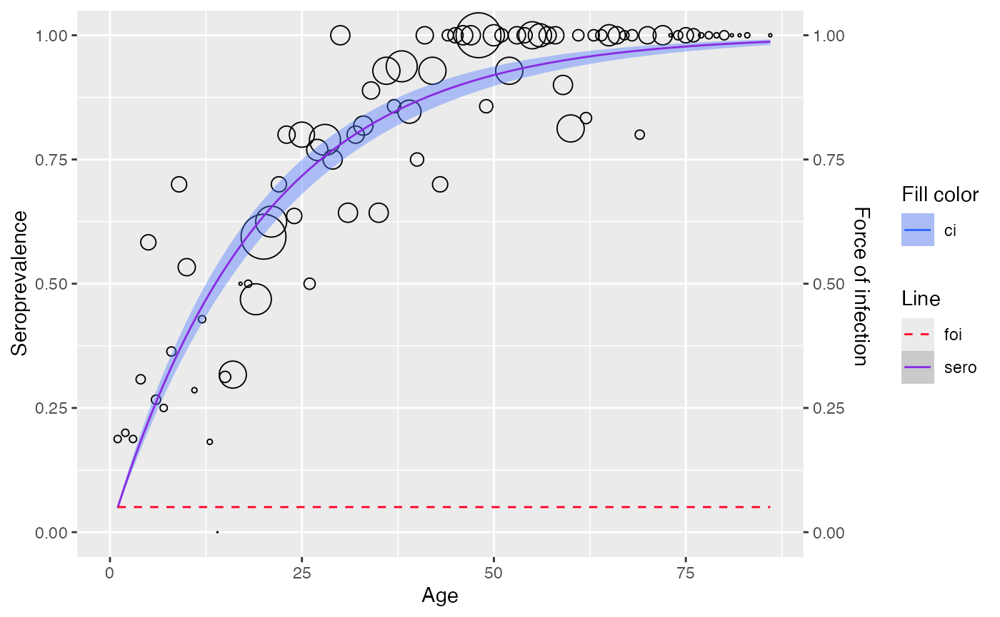

Polynomial models
Refer to Chapter 6.1.1
Use polynomial_model() to fit a polynomial model.
We will use the Hepatitis A data from Belgium 1993–1994
for this example.
a <- hav_bg_1964
neg <- a$tot -a$pos
pos <- a$pos
age <- a$age
tot <- a$totMuench model
Proposed model
(Muench 1934) suggested to model the infection process with so-called “catalytic model”, in which the distribution of the time spent in the susceptible class in SIR model is exponential with rate \(\beta\)
\[ \pi(a) = k(1 - e^{-\beta a} ) \]
Where:
- \(\pi\) is the seroprevalence at age \(a\)
\(1 - k\) is the proportion of population that stay uninfected for a lifetime
\(a\) is the variable age
Under this catalytic model and assuming that \(k = 1\), force infection would be \(\lambda(a) = \beta\)
Fitting data
Muench’s model can be estimated by either defining
k = 1 (a degree one linear predictor, note that it is
irrelevant to the k in the proposed model) or setting the
type = "Muench".
muench1 <- polynomial_model(age, pos = pos, tot = tot, k = 1)
summary(muench1$info)
#>
#> Call:
#> glm(formula = age(k), family = binomial(link = link), data = df)
#>
#> Coefficients:
#> Estimate Std. Error z value Pr(>|z|)
#> Age -0.050500 0.002457 -20.55 <2e-16 ***
#> ---
#> Signif. codes: 0 '***' 0.001 '**' 0.01 '*' 0.05 '.' 0.1 ' ' 1
#>
#> (Dispersion parameter for binomial family taken to be 1)
#>
#> Null deviance: Inf on 83 degrees of freedom
#> Residual deviance: 97.275 on 82 degrees of freedom
#> AIC: 219.19
#>
#> Number of Fisher Scoring iterations: 5
muench2 <- polynomial_model(age, pos = pos, tot = tot, type = "Muench")
summary(muench2$info)
#>
#> Call:
#> glm(formula = age(k), family = binomial(link = link), data = df)
#>
#> Coefficients:
#> Estimate Std. Error z value Pr(>|z|)
#> Age -0.050500 0.002457 -20.55 <2e-16 ***
#> ---
#> Signif. codes: 0 '***' 0.001 '**' 0.01 '*' 0.05 '.' 0.1 ' ' 1
#>
#> (Dispersion parameter for binomial family taken to be 1)
#>
#> Null deviance: Inf on 83 degrees of freedom
#> Residual deviance: 97.275 on 82 degrees of freedom
#> AIC: 219.19
#>
#> Number of Fisher Scoring iterations: 5We can plot any model with the plot() function.
plot(muench2) 
Griffith model
Proposed model
Griffith proposed a model for force of infection as followed
\[ \lambda(a) = \beta_1 + 2\beta_2a \]
Which can be estimated using a GLM where the for which the linear predictor was \(\eta(a) = \beta_1 + \beta_2a^{2}\)
Fitting data
Similarly, we can estimate Griffith’s model either
by defining k = 2, or setting the
type = "Griffith"
gf_model <- polynomial_model(age, pos = pos, tot = tot, type = "Griffith")
plot(gf_model)
Grenfell and Anderson model
Proposed model
(Grenfell and Anderson 1985) extended the models of Muench and Griffiths further suggest the use of higher order polynomial functions to model the force of infection which assumes prevalence model as followed
\[ \pi(a) = 1 - e^{-\Sigma_i \beta_i a^i} \]
Which implies that force of infection equals \(\lambda(a) = \Sigma \beta_i i a^{i-1}\)
Fitting data
And Grenfell and Anderson’s model.
grf_model <- polynomial_model(age, pos = pos, tot = tot, type = "Grenfell")
plot(grf_model)
Nonlinear models
Refer to Chapter 6.1.2
Farrington model
Proposed model
For Farrington’s model, the force of infection was defined non-negative for all a \(\lambda(a) \geq 0\) and increases to a peak in a linear fashion followed by an exponential decrease
\[ \lambda(a) = (\alpha a - \gamma)e^{-\beta a} + \gamma \]
Where \(\gamma\) is called the long term residual for FOI, as \(a \rightarrow \infty\) , \(\lambda (a) \rightarrow \gamma\)
Integrating \(\lambda(a)\) would results in the following non-linear model for prevalence
\[ \pi (a) = 1 - e^{-\int_0^a \lambda(s) ds} \\ = 1 - exp\{ \frac{\alpha}{\beta}ae^{-\beta a} + \frac{1}{\beta}(\frac{\alpha}{\beta} - \gamma)(e^{-\beta a} - 1) -\gamma a \} \]
Fitting data
Use farrington_model() to fit a
Farrington’s model.
rubella <- rubella_uk_1986_1987
rubella$neg <- rubella$tot - rubella$pos
farrington_md <- farrington_model(
rubella$age, pos = rubella$pos, tot = rubella$tot,
start=list(alpha=0.07,beta=0.1,gamma=0.03)
)
plot(farrington_md)
Weibull model
Proposed model
For a Weibull model, the prevalence is given by
\[ \pi (d) = 1 - e^{ - \beta_0 d ^ {\beta_1}} \]
Where \(d\) is exposure time (difference between age of injection and age at test)
The model was reformulated as a GLM model with log - log link and linear predictor using log(d)
\[\eta(d) = log(\beta_0) + \beta_1 log(d)\]
Thus implies that the force of infection is a monotone function of the exposure time as followed
\[ \lambda(d) = \beta_0 \beta_1 d^{\beta_1 - 1} \]
Fitting data
Use weibull_model() to fit a Weibull model.
hcv <- hcv_be_2006[order(hcv_be_2006$dur), ]
dur <- hcv$dur
infected <- hcv$seropositive
wb_md <- weibull_model(
t = dur,
status = infected
)
plot(wb_md) 
Fractional polynomial model
Refer to Chapter 6.2
Proposed model
Fractional polynomial model generalize conventional polynomial class of functions. In the context of binary responses, a fractional polynomial of degree \(m\) for the linear predictor is defined as followed
\[ \eta_m(a, \beta, p_1, p_2, ...,p_m) = \Sigma^m_{i=0} \beta_i H_i(a) \]
Where \(m\) is an integer, \(p_1 \le p_2 \le... \le p_m\) is a sequence of powers, and \(H_i(a)\) is a transformation given by
\[ H_i = \begin{cases} a^{p_i} & \text{ if } p_i \neq p_{i-1}, \\ H_{i-1}(a) \times log(a) & \text{ if } p_i = p_{i-1}, \end{cases} \]
Best power selection
Use find_best_fp_powers() to find the powers which gives
the lowest deviance score
hav <- hav_be_1993_1994
best_p <- find_best_fp_powers(
hav$age, pos = hav$pos,tot = hav$tot,
p=seq(-2,3,0.1), mc=FALSE, degree=2, link="cloglog"
)
best_p
#> $p
#> [1] 1.5 1.6
#>
#> $deviance
#> [1] 81.60333
#>
#> $model
#>
#> Call: glm(formula = as.formula(formulate(p_cur)), family = binomial(link = link))
#>
#> Coefficients:
#> (Intercept) I(age^1.5) I(age^1.6)
#> -3.61083 0.12443 -0.07656
#>
#> Degrees of Freedom: 85 Total (i.e. Null); 83 Residual
#> Null Deviance: 1320
#> Residual Deviance: 81.6 AIC: 361.2Fitting data
Use fp_model() to fit a fractional polynomial model
model <- fp_model(
hav$age, pos = hav$pos, tot = hav$tot,
p=c(1.5, 1.6), link="cloglog")
compute_ci.fp_model(model)
#> x y ymin ymax
#> 1 0.500000 0.02716482 0.01959292 0.03760634
#> 2 1.353535 0.02862007 0.02076739 0.03938180
#> 3 2.207071 0.03050022 0.02229336 0.04166326
#> 4 3.060606 0.03272353 0.02411019 0.04434334
#> 5 3.914141 0.03526829 0.02620530 0.04738857
#> 6 4.767677 0.03813303 0.02858256 0.05079025
#> 7 5.621212 0.04132595 0.03125392 0.05455127
#> 8 6.474747 0.04486080 0.03423621 0.05868100
#> 9 7.328283 0.04875493 0.03754957 0.06319273
#> 10 8.181818 0.05302816 0.04121663 0.06810243
#> 11 9.035354 0.05770215 0.04526197 0.07342778
#> 12 9.888889 0.06279986 0.04971170 0.07918768
#> 13 10.742424 0.06834517 0.05459314 0.08540179
#> 14 11.595960 0.07436252 0.05993448 0.09209011
#> 15 12.449495 0.08087661 0.06576446 0.09927268
#> 16 13.303030 0.08791198 0.07211204 0.10696929
#> 17 14.156566 0.09549275 0.07900598 0.11519909
#> 18 15.010101 0.10364218 0.08647445 0.12398036
#> 19 15.863636 0.11238230 0.09454458 0.13333012
#> 20 16.717172 0.12173352 0.10324196 0.14326387
#> 21 17.570707 0.13171416 0.11259010 0.15379519
#> 22 18.424242 0.14234005 0.12260991 0.16493547
#> 23 19.277778 0.15362405 0.13331910 0.17669357
#> 24 20.131313 0.16557562 0.14473160 0.18907544
#> 25 20.984848 0.17820037 0.15685696 0.20208387
#> 26 21.838384 0.19149963 0.16969980 0.21571816
#> 27 22.691919 0.20547006 0.18325928 0.22997380
#> 28 23.545455 0.22010329 0.19752856 0.24484227
#> 29 24.398990 0.23538562 0.21249445 0.26031074
#> 30 25.252525 0.25129778 0.22813709 0.27636190
#> 31 26.106061 0.26781475 0.24442970 0.29297378
#> 32 26.959596 0.28490571 0.26133858 0.31011961
#> 33 27.813131 0.30253403 0.27882315 0.32776771
#> 34 28.666667 0.32065739 0.29683627 0.34588144
#> 35 29.520202 0.33922801 0.31532461 0.36441921
#> 36 30.373737 0.35819301 0.33422931 0.38333451
#> 37 31.227273 0.37749480 0.35348672 0.40257603
#> 38 32.080808 0.39707168 0.37302931 0.42208783
#> 39 32.934343 0.41685844 0.39278668 0.44180970
#> 40 33.787879 0.43678713 0.41268659 0.46167752
#> 41 34.641414 0.45678779 0.43265608 0.48162384
#> 42 35.494949 0.47678937 0.45262248 0.50157854
#> 43 36.348485 0.49672055 0.47251437 0.52146971
#> 44 37.202020 0.51651067 0.49226246 0.54122460
#> 45 38.055556 0.53609057 0.51180028 0.56077069
#> 46 38.909091 0.55539345 0.53106484 0.58003679
#> 47 39.762626 0.57435568 0.54999703 0.59895424
#> 48 40.616162 0.59291745 0.56854205 0.61745792
#> 49 41.469697 0.61102348 0.58664964 0.63548732
#> 50 42.323232 0.62862347 0.60427423 0.65298738
#> 51 43.176768 0.64567252 0.62137511 0.66990917
#> 52 44.030303 0.66213145 0.63791643 0.68621046
#> 53 44.883838 0.67796694 0.65386716 0.70185598
#> 54 45.737374 0.69315156 0.66920108 0.71681762
#> 55 46.590909 0.70766374 0.68389659 0.73107434
#> 56 47.444444 0.72148757 0.69793657 0.74461197
#> 57 48.297980 0.73461254 0.71130813 0.75742291
#> 58 49.151515 0.74703320 0.72400232 0.76950564
#> 59 50.005051 0.75874875 0.73601383 0.78086420
#> 60 50.858586 0.76976255 0.74734066 0.79150759
#> 61 51.712121 0.78008167 0.75798364 0.80144916
#> 62 52.565657 0.78971633 0.76794612 0.81070592
#> 63 53.419192 0.79867939 0.77723350 0.81929794
#> 64 54.272727 0.80698582 0.78585282 0.82724767
#> 65 55.126263 0.81465218 0.79381235 0.83457942
#> 66 55.979798 0.82169617 0.80112116 0.84131869
#> 67 56.833333 0.82813613 0.80778876 0.84749172
#> 68 57.686869 0.83399062 0.81382480 0.85312499
#> 69 58.540404 0.83927809 0.81923866 0.85824471
#> 70 59.393939 0.84401643 0.82403928 0.86287648
#> 71 60.247475 0.84822275 0.82823488 0.86704484
#> 72 61.101010 0.85191307 0.83183279 0.87077301
#> 73 61.954545 0.85510205 0.83483926 0.87408252
#> 74 62.808081 0.85780288 0.83725937 0.87699300
#> 75 63.661616 0.86002700 0.83909685 0.87952200
#> 76 64.515152 0.86178403 0.84035397 0.88168483
#> 77 65.368687 0.86308166 0.84103143 0.88349447
#> 78 66.222222 0.86392548 0.84112821 0.88496159
#> 79 67.075758 0.86431902 0.84064144 0.88609456
#> 80 67.929293 0.86426362 0.83956628 0.88689948
#> 81 68.782828 0.86375845 0.83789584 0.88738031
#> 82 69.636364 0.86280045 0.83562110 0.88753895
#> 83 70.489899 0.86138442 0.83273093 0.88737534
#> 84 71.343434 0.85950298 0.82921209 0.88688755
#> 85 72.196970 0.85714665 0.82504940 0.88607189
#> 86 73.050505 0.85430394 0.82022587 0.88492295
#> 87 73.904040 0.85096143 0.81472299 0.88343368
#> 88 74.757576 0.84710393 0.80852105 0.88159545
#> 89 75.611111 0.84271461 0.80159953 0.87939813
#> 90 76.464646 0.83777525 0.79393761 0.87683008
#> 91 77.318182 0.83226642 0.78551469 0.87387829
#> 92 78.171717 0.82616781 0.77631105 0.87052838
#> 93 79.025253 0.81945855 0.76630847 0.86676475
#> 94 79.878788 0.81211754 0.75549100 0.86257063
#> 95 80.732323 0.80412392 0.74384571 0.85792827
#> 96 81.585859 0.79545748 0.73136344 0.85281900
#> 97 82.439394 0.78609923 0.71803967 0.84722350
#> 98 83.292929 0.77603184 0.70387518 0.84112196
#> 99 84.146465 0.76524031 0.68887688 0.83449431
#> 100 85.000000 0.75371250 0.67305839 0.82732055
plot(model)